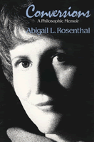

<body bgcolor="#FFFFFF" text="#000000" link="#0000FF" vlink="#CC0000" alink="#CC0000"><center><hr width="350" size="1" align="center" noshade>An autobiographical account illustrates the relationship between individuals and history<hr width="350" size="1" align="center" noshade><p><a href="https://cdcshoppingcart.uchicago.edu/Cart/ChicagoBook.aspx?ISBN=9781566392198&&PRESS=temple" target="_top">Buy this book!</a> | <a href="https://cdcshoppingcart.uchicago.edu/Cart/Cart.aspx?PRESS=temple" target="_top">View Cart</a> | <a href="https://cdcshoppingcart.uchicago.edu/Cart/Cart.aspx?PRESS=temple" target="_top">Check Out</a></p><p></p></center><!--none//--><h1>Conversions</h1>
<H2>A Philosophic Memoir</H2>
<h3>Abigail L. Rosenthal</h3>
<P>cloth 1-56639-219-5 $80.50, Jan 95, <FONT COLOR=#990033>Out of Stock Unavailable</FONT>
<br>paper 1-56639-220-9 $28.95, Jan 95, <FONT COLOR=#990033>Out of Stock Unavailable</FONT>
<br>Electronic Book 1-59213-157-3 $.00 <FONT COLOR=#990033>Out of Stock Unavailable</FONT>
<BR> 296 pp
6x9
</P><p><I>Conversions: A Philosophic Memoir</I> belongs to the tradition of Augustine and Rousseau: the "confession" of a life that is a quest for truth. It is in large part the story of two major episodes from Abigail Rosenthal's early adulthood, bought putting personal identity dramatically at risk.
<p>As a young Fulbright scholar in Paris, Rosenthal met and entered reluctantly into a love affair with a young Greek communist philosopher who believed (along with many Parisian intellectuals of that era) that force and deception were justified by a utopian vision of world history. In the inevitable collision of values&#151between Jew and Greek, liberal and revolutionary, theist and atheist, woman and man in unequal truggle&#151they separated.
<p>Suffering in the aftermath, she at last turned for help to a young African American woman graduate student whom she met in London. This woman's Gnostic Christian rejection of personal and cultural history eventually left Rosenthal without defense against her new mentor's remarkable use of charisma, ridicule, and moralistic reproach to usurp the author's life story. These stratagems of mind control reached a climactic phase in Portugal, where the two went&#151Rosenthal to paint the other woman to write&#151in what would turn out to be the terrifying reverse of a summer idyll. With the U.S. State Department, the Portuguese Policía Internacional devised an extraordinary rescue.
<p>This arresting narrative, which deals with relations between blacks and whites, Christians and Jews, and men and women, delivers its own philosophic theory of the individual in history.
<BR>&nbsp;<h2>Excerpt</h2><P>Excerpt available at <a href="http://www.temple.edu/tempress">www.temple.edu/tempress</a></p>
<BR>&nbsp;<h2>Reviews</h2>
<p><I>"Rosenthal's work belongs to the classical tradition of the life that is a quest for truth. Pertinent to the genre is its relation to the tradition of Augustine and Rousseau. She is also anti-Augustinian in that her depiction of history is oriented by the standpoint of Judaism rather than Christianity and is bound up with a quest for the historical realization of justice.
<p>"The first of the two episodes she recounts is a love affair (entered into reluctantly) with a young Greek communist philosopher whom she met in Paris while a Fulbright student in the late 1950s. The second, darker, episode is a later Pygmalion-like involvement with an African American woman graduate student whom Rosenthal first encountered in London, where she worked on a Hegel dissertation, and with whom she entered into a life-threatening reverse, as it were, idyll in a small Portuguese village. The saga is replete with details that could have been dreamt up by Le Carre: Salazar's Portugal, its intelligence arm, the U.S. State Department. Her depiction of these complex relations raises in unsettling ways the question of what counts as freedom, as racism, as terror.
<p>"Her in-passing observations about analytic philosophy, existentialism, and postmodernism (and I am far from being in her camp on many issues) are worth the price of the book. Hers is an original philosophic mind."</I>
<br>&#151<b>Edith Wyschogrod</b>, 1993 President of the American Academy of Religion and Jay Newton Rayzor Professor of Philosophy and Religious Thought, Rice University
<BR>&nbsp;<h2>Contents</h2><P>
<p>Preface
<p><b>Part I: The Realm of Essences</b>
<br>1. Beginningwise
<br>2. Paris Without End
<br>3. Green Age
<br>4. Purity and Impurity
<br>5. The Sense of the Argument
<br>6. Shoreline
<br>7. <I>La Méthode éternelle</I>
<p><b>Part II: Analytic</b>
<br>8. Of the Impossible Position of the Jews
<br>9. Of Silence in General
<br>10. <I>IVenceremos!</I>
<br>11. Of Women and Philosophy
<p><b>Part III: Another Paradigm</b>
<br>12. By the Narrow Way
<br>13. A Competitive Conversation
<br>14. A Conversion
<br>15. Thought Reform
<br>16. Framed
<br>17. Policía Internacional
<br>18 Beginning Again
<p>Epilogue
<br>Notes
</P><BR>&nbsp;<H2>About the Author(s)</H2>
<P><b>Abigail L. Rosenthal</b> is Professor of Philosophy at Brooklyn College of The City University of New York and the author of <I>A Good Look at Evil</I> (Temple).</P>
<BR><H2>Subject Categories</H2>
<p><A HREF="/tempress/philosophy.html" TARGET="_top">Philosophy and Ethics</a>
</p>
<p align="center"><a href="https://cdcshoppingcart.uchicago.edu/Cart/ChicagoBook.aspx?ISBN=9781566392198&&PRESS=temple" target="_top">Buy this book!</a> | <a href="https://cdcshoppingcart.uchicago.edu/Cart/Cart.aspx?PRESS=temple" target="_top">View Cart</a> | <a href="https://cdcshoppingcart.uchicago.edu/Cart/Cart.aspx?PRESS=temple" target="_top">Check Out</a></p><p><font face="Arial" size="1"><a href="copyright.html" onMouseOver="window.status='Web Copyright Policy';return true;" onMouseOut="window.status=''" title="Web Copyright Policy">&copy;</a> 2015 <a href="http://www.temple.edu" target="new" onMouseOver="window.status='Link to Temple University home page';return true;" onMouseOut="window.status=''" title="Link to Temple University home page">Temple University</a>. All Rights Reserved. http://www.temple.edu/tempress/titles/1133_reg.html</font></p>